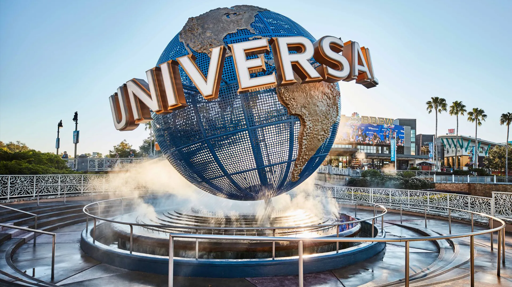
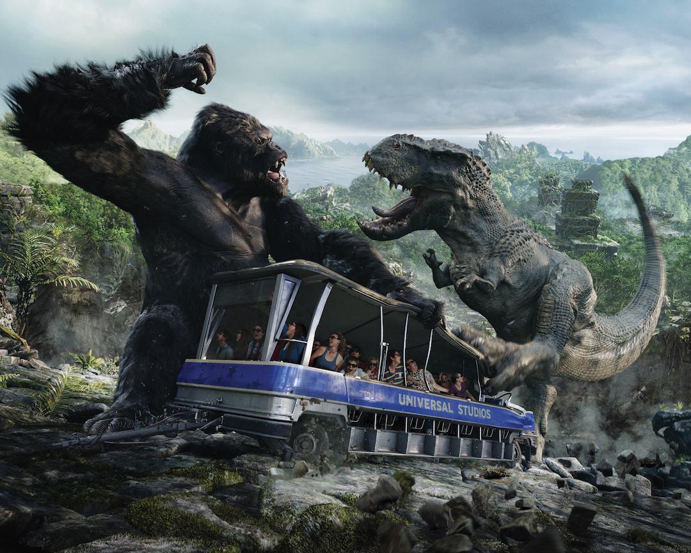
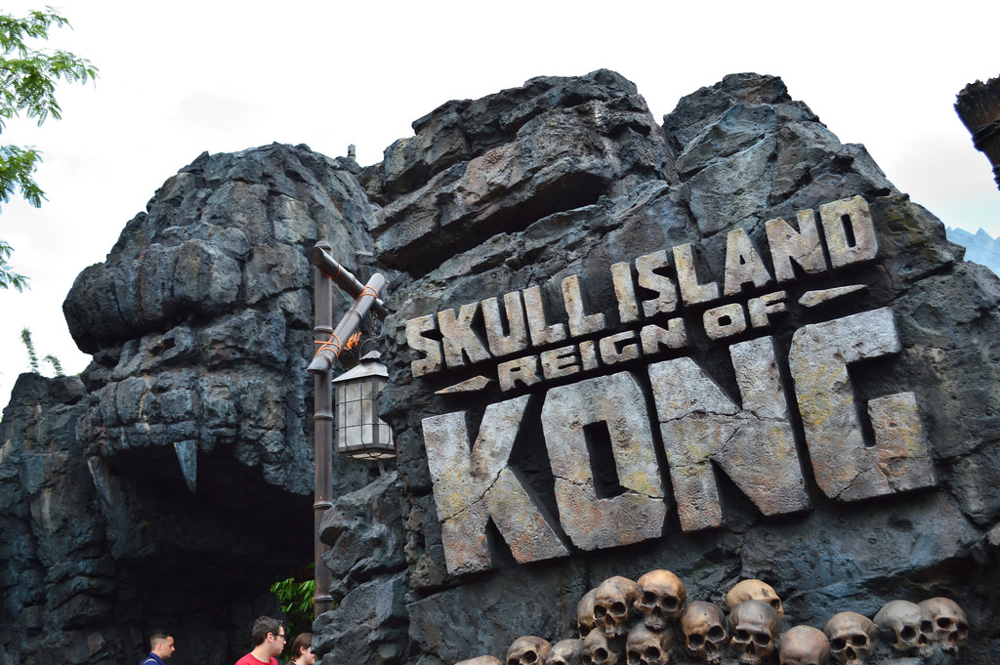

DMS 321 Midterm: "My vacation at Universal Studios"
DMS 321 Midterm: "My vacation at Universal Studios"

I decided that for this project I would focus on the time I went to Universal Studios last year. It was really fun! I had a really good time!
I remember the first time I went to Universal Orlando. It was an amazing experience. I absolutely enjoyed my first time there, so when my Dad planned a trip for us to go again, I was really looking forward to it! I haven't been in years! Coming back after all that time was incredible! So much familiarity, and yet a lot had changed!
 
There were a lot of new rides. A King Kong ride, which was okay, but I was hoping for a lot more. The line was extremely long, maybe because it was new, or maybe people really liked it. The rides goal was to put you right in the cross hairs of Kong and the other creatures that made appearences on the island. We were inside an vechicle and Kong would grab us and toss us. There was water that would get splashed on us, as well as other enviormental stuff. Monsters attempted to attack us as our vechicle bobbed back and forth. It should have been an amazing ride, yet it left me wanting more from it. The movement in the ride wasn't completely there, we didn't get thrown around as much as I would have liked to. To be fair, I think it was supposed to be a ride anyone could get on. However there is a Godzilla ride that exist in Universal Studios Japan that looks AMAZING, all the action I would want in a 4D ride! Defenitly putting that ride on my bucket list. Maybe it's just me, 4D rides are more for spectacle rather than the intenseness you'd get from a traditional roller coaster. The action was pretty good, and the set peices were amazing!
Continue the story.